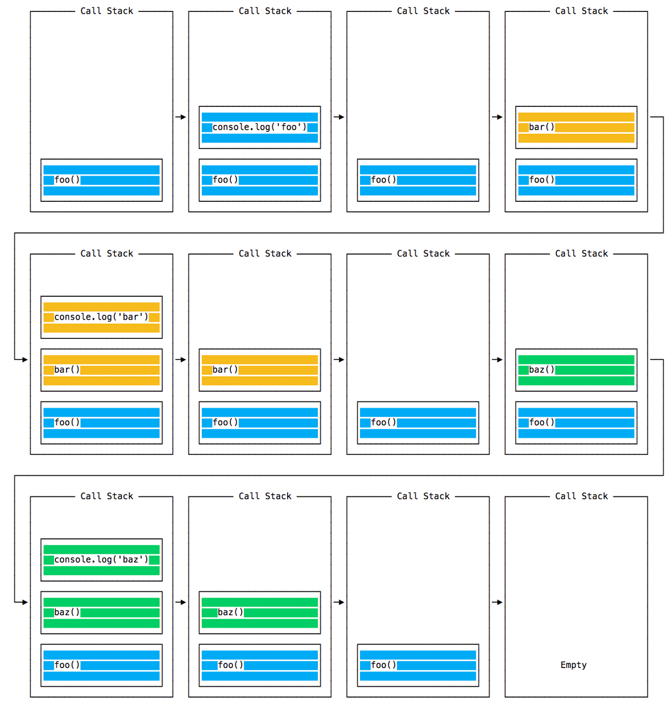
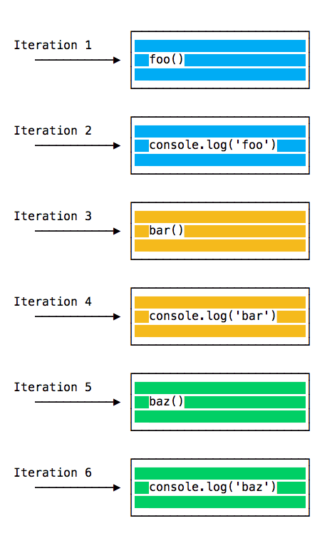
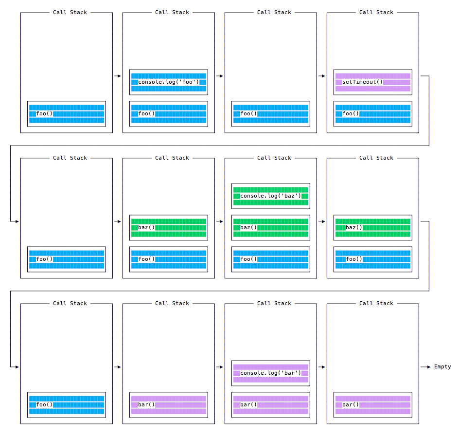
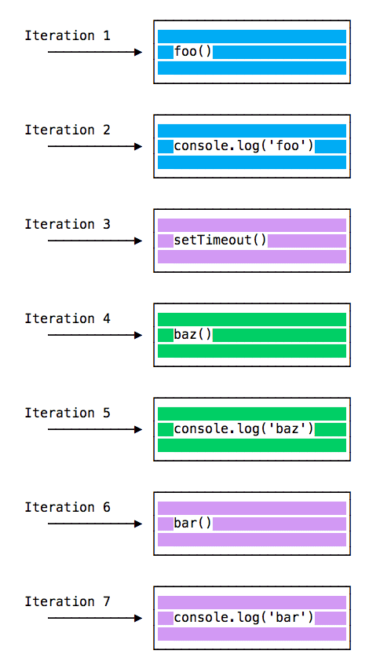
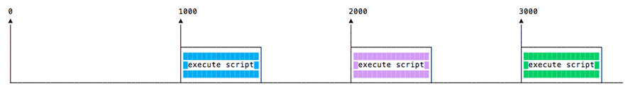
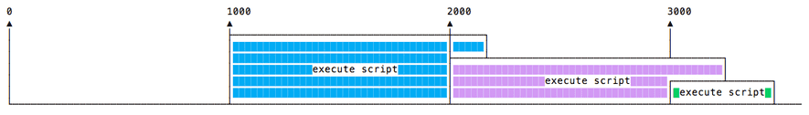
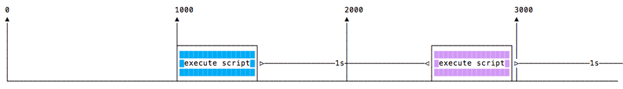

这篇文章上次修改于 907 天前，可能其部分内容已经发生变化，如有疑问可询问作者。
Event Loop 事件循环
event loop 是我们学习 node.js 中最重要的方面之一。因为它解释了 node.js 如何进行异步动作，同时不会出现 IO 阻塞问题。这也是 node.js 能够变得如此流行的原因之一。
node.js 代码运行在单进程中，也就是说它在一刻只能执行一个任务。这一限制特性使得我们不用担心任务间冲突问题。我们在变开发中只需要专注于代码本身，同时应避免进程阻塞，例如同步方式等待网络请求，死循环等。
通常情况下，浏览器中的每个 tab 页面都是都有各自独立的 event loop，防止某个页面的死循环或过高的资源消耗影响到整个浏览器的体验。我们只需要关注于我们的代码运行在一个单一的 event loop 中，编程中要注意到这一点，防止进程阻塞。
JavaScript 代码中如果有长时间等待 return 返回给 event loop 控制时，任何其他代码将会被阻塞，也会阻塞页面 UI 单元，用户在此期间无法进行点击，滚动等操作。
几乎所有的 JavaScript 原生 IO 指令都是 non-blocking 非阻塞式的，例如：网络请求，文件读写等，阻塞是一种 exception 例外情况，这也是 JavaScript 大量的使用 callback 方式，以及最近引入的 promise 和 async/await。
call stack 调用结构
JavaScript 的 call 调用过程的结构遵循 LIFO (Last In, First Out)，也就是总是先响应最近的任务。
event loop 总是连续的检查 call stack 看是否有任务需要执行。在这个过程中，它会将发现的任务添加到 call stack 中并按顺序执行。
下面是一个简单的示例：
const bar = () => console.log('bar');
const baz = () => console.log('baz');
const foo = () => {
console.log('foo');
bar();
baz();
}
foo();
console.log('END');
//output:
//foo
//bar
//baz
//END在以上示例中，首先会调用 foo()，在 foo 中首先会调用 bar()，然后调用 baz()。call stack 执行过程如下：

在 event loop 的每次 iteration 递归执行中会查询 call stack 中是否有需要执行的任务，如果有则执行它，直到 loop 结束为止，如下是循环中的全过程：

以上示例说明了 JavaScript 在一般情况下按顺序执行代码的过程。下面介绍如何将一个 function 推迟到 call stack 递归到最后时再被调用。
需要使用以下的代码指令：
setTimeout(() => {}, 0)
以上代码调用了 setTimeout 延时 function，但是将延时设置为 0，这样的意义就是要求它在可以执行的时候立刻执行其中定义的 function。那么如何才能让其在层级的最后再执行 function 呢？下面是一个完整的片段：
const bar = () => console.log('bar');
const baz = () => console.log('baz');
const foo = () => {
console.log('foo');
setTimeout(bar, 0);
baz();
}
foo();
console.log('END');
//output:
//foo
//baz
//END
//bar以上示例中，我们在 foo 中先调用 setTimeout function，并将时间设置为 0，要求其在可以执行时立刻执行内部定义的指令，以上示例循环的 call stack 过程如下：

下面时循环的顺序执行全过程：

为什么会是这样的执行顺序呢？为什么 setTimeout 时间设置为 0 反而最后才执行其 function？下面做介绍。
Message Queue 消息队列
当 setTimeout() 被调用时，浏览器或 node.js 会开启一个定时器，当定时时间到达时，这里我们设置为 0 也就是立刻到达了时间，callback 响应的 function 会被放到 Message Queue 消息队列中。
Message Queue 消息队列也管理着用户主动触发的一些事件如鼠标点击键盘输入等，或者 fetch 获取响应信息，这些消息按顺序排列着等待被代码执行。
call stack 和 Message Queue 是互相独立的，event loop 循环时 call stack 中的任务是优先的，它会首先查找 call stack 中需要执行的代码并按顺序执行，当 satck 执行完成后再去查看 Message Queue 中需要处理的任务。
我们并不需要等待一些 functions 如 setTimeout 或 fetch 这些任务的执行过程，因为这些工作由浏览器提供且这些任务运行在它们单独的线程中。例如当我们设置了 setTimeout 2 秒的定时，我们并不需要停下来等待这 2 秒钟，而是会执行层级中接下来的指令。
Job Queue 任务队列
ES6 中引入了一种新的 Job Queue 任务队列概念，也就是 Promise。提供了在条件到达后立刻执行被调用 function 的方法，而不是等待到 call stack 结束。
当 Promise 定义的 resolve 条件满足时，会在当前 call stack 执行结束后立刻执行 resolve function。
简单的区分 Message Queue 和 Job Queue：Message Queue 会将出现的每个任务按顺序排列到队列最后，等待排队执行。而 Job Queue 就像拿到了快捷车票，会在 stack 中的指令结束后立刻跳转到这个任务上来。
下面是一个示例：
const bar = () => console.log('bar');
const baz = () => console.log('baz');
const foo = () => {
console.log('foo');
setTimeout(bar, 0);
new Promise((resolve, reject) =>
resolve("should be right after baz, before bar"))
.then(resolve => console.log(resolve));
baz();
}
foo();
console.log('END');
//output:
//foo
//baz
//END
//should be right after baz, before bar
//bar以上示例可以看到，promise 定义之后会继续运行 stack 中接下来的常规指令，然后 promise 的 resolve 条件会立刻得到满足，此时异步任务会在 stack 中的任务执行结束后立刻被响应而不是排列到队列最后。
理解 process.nextTick()
上面我们介绍了 event loop 的相关概念，一次的 event loop 循环叫做一个 tick，注意此循环只包含常规 call stack 中的任务。当我们给 process.nextTick() 传递一个 function 时，就是告诉 engine 在本次循环 tick 结束下次循环开始前执行这个 function。
语法如下：
process.nextTick(() => {
//do something
})当 call stack 中的任务执行完毕后，js engine 会优先查询是否在 nextTick 中定义了 function，如果有就会优先执行它们，然后是 Job Queue 的异步响应，最后才是 Message Queue 队列中的任务。
请看下面的示例：
const bar = () => console.log('bar');
const baz = () => console.log('baz');
const foo = () => {
console.log('foo');
setTimeout(bar, 0);
new Promise((resolve, reject) =>
resolve("should be right after baz, before bar"))
.then(resolve => console.log(resolve));
baz();
}
foo();
console.log('END');
process.nextTick(() => console.log("next tick"));
//output:
//foo
//baz
//END
//next tick
//should be right after baz, before bar
//bar理解 setImmediate()
setImmediate function 用来定义在下次 event loop 循环开始前执行的 function。语法如下：
setImmediate(() => {
//run something
})setImmediate() 和上面讲到的 setTimeout(() => {}, 0)，Promise，process.nextTick()，不同点是它是执行在下个循环中的，而其它几种都是属于当前循环的，所以它是最后被执行的。
下面是一个包含这几种类型的异步任务的完整示例：
const bar = () => console.log('bar');
const baz = () => console.log('baz');
const foo = () => {
console.log('foo');
setTimeout(bar, 0);
new Promise((resolve, reject) =>
resolve("should be right after baz, before bar"))
.then(resolve => console.log(resolve));
baz();
}
foo();
console.log('END');
process.nextTick(() => console.log("next tick"));
setImmediate(() => console.log("immediate"));
//output:
//foo
//baz
//END
//next tick
//should be right after baz, before bar
//bar
//immediatetimers 定时器
setTimeout()
当需要延时执行一个 function 时，可以使用 setTimeout function 实现。使用它定义需要延时执行的任务以及延时的具体时间，以毫秒为单位。示例如下：
setTimeout(() => {
console.log('delay 1s')
}, 1000);
console.log('start')以上示例会延时一秒输出对应信息。
也可以传入预定义的 function 以及传递数据给 setTimeout：
const test = (a, b) => console.log(a + b);
setTimeout(test, 2000, 1, 2);以上示例中，setTimeout 调用 test function，1 和 2 为 test 的传入数据。
setTimeout 会返回一个 timer ID，你可以存储这个它，可以通过 id 清除对应的定时器以取消对应的计划任务：
const t1 = setTimeout(() => {
console.log('delay 1s')
}, 1000);
clearTimeout(t1);以上示例中由于通过 id 清除了 t1 定时器，所以任务不会被执行。
一个特殊情况就是将延时设置为 0 也就是上一节介绍的内容，这是定义的任务会排列在 message queue 中并在本次循环结束后按顺序被执行。
setInterval()
setInterval 和 setTimeout 功能类似，但区别是 setInterval 会连续响应定义的任务，响应的间隔时间以毫秒为单位，在 setInterval 中自定义。
下面是一个简单的示例：
setInterval(() => {
console.log('wow');
}, 500);程序运行后会每隔 500 毫秒连续输出信息。
同样的通过 timer ID 使用 clearInterval 可以清除对应的 setInterval 定时任务：
const t2 = setInterval(() => {
console.log('wow');
}, 500);
setTimeout(() => {
clearInterval(t2);
}, 2000);以上程序执行后，会每隔 500 毫秒输出 wow，两秒后停止输出。
setInterval 会在指定的时间间隔下连续执行定义的 function 而不会考虑这个定义的 function 运行需要多少时间。
如果这个 function 一直保持固定的执行时间，不会有什么问题：

如果这个 function 在一些情况下执行时间大于设定的间隔时间，则前一个任务还没结束下一个任务已经要开始，就会造成冲突问题：

为了避免这种情况发生，可以在需要连续调用的 function 执行结束时调用递归 setTimeout 来避免：
const test2 = () => {
console.log('wow');
setTimeout(test2, 1000);
}
test2();以上示例中，我们在 function 定义中在指令结束后定义一个 setTimeout 调用其本身，这样可以实现连续对自身的调用且能保证每个任务都是被完整执行后才开始下一次执行的：

Asynchronous and Callbacks 异步与响应
在目前的电脑中，应用程序在特定的时间在占用系统资源运行任务，然后结束程序释放资源给其他程序使用。这个过程在以极快的速度循环进行着以至于我们以为这些程序在同时进行处理(多处理器设备除外)。
程序内部通过 interrupts 中断：一个发送给处理器的信号，来获得系统的注意及时处理相关响应动作。这使得系统可以在某个任务等待回应过程中去处理其他事情，例如当程序在等待某个网络回应时，不能要求整个系统都停下来等待。
通常情况下，编程语言都是默认以 synchronous 同步的方式执行代码的，部分编程语言提供了其他支持库的方式实现异步，或者通过多线程的方式支持异步。
JavaScript 默认是同步和单线程模式，也就是说它不可以新建线程和平行运行。代码是按照编程顺序逐行执行的，如下示例：
const a = 1
const b = 2
const c = a * b
console.log(c)但是 JavaScript 是诞生于浏览器的，它的主要工作就是响应用户的交互操作，如：onClick, onMouseOver, onChange, onSubmit 等。那么它如何在同步模式下实现上面的功能呢？
答案就在他的运行环境中，浏览器提供了一系列的 APIs 来处理这些功能。node.js 引入了 non-blocking I/O 无阻塞 IO 的环境使得在此基础上扩展了文件访问，网络访问等的异步处理能力。
你无法预知用户何时会点击了浏览器的一个按钮，所以我们就会提前定义一个 click event 的 event handler 事件处理器，这个 event handler 内需要定义一个 function，当事件被触发时会自动被调用。
如下示例定义了一个 button 的 click event handler：
document.getElementById('button').addEventListener('click', () => {});
这个响应过程叫做 callback。
一个 callback 就是一个作为某个 function 的传入参数的 function，且只会在 event 被触发时才被执行。
JavaScript 可以定义 first-class functions，能够以参数的形式传入其他 function，也叫 higher-order functions。
通常情况，我们可以将客户端代码放在 window object 的 load event 中作为 callback function，这样就可以在页面加载完成后执行这部分代码：
window.addEventListener('load', () => {
//...
})callback 不止在浏览器的 DOM 结构下应用，一个常用的情景就是定时器：
setTimeout(() => {
// runs after 2 seconds
}, 2000)XHR 请求也会接受 callback，下面的示例中将一个 function 赋值给 XMLHttpRequest 的一个 property，当特定的 event 发生时会调用定义的 function：
const XMLHttpRequest = require('xmlhttprequest').XMLHttpRequest;
const xhr = new XMLHttpRequest();
xhr.onreadystatechange = () => {
if (xhr.readyState == 4) {
xhr.status == 200 ? console.log(xhr.responseText) : console.log('error');
};
};
xhr.open('GET', 'https://niekun.net');
xhr.send();以上示例执行后，如果网址访问成功则会输出网页内容，否则输出 error。
那么如何处理 callback 的 errors？通常情况下 node.js 接受的的策略是：将 callback function 的第一个参数作为 error object，叫做 error-first callbacks。当没有 error 时 object 为 null，当有 error 发生时，object 中会包含相关信息。
下面是一个读取文件的示例：
const fs = require('fs')
fs.readFile('./fs.json', (err, data) => {
if (err !== null) {
console.log('read error');
return;
}
console.log(data.toString());
})在读取中有错误时 err 会包含错误信息。
callback 在一般情况下使用很方便，但是每个 callback 相当于增加了一层嵌套层级，当你有很多个 callback 时就会产生多级嵌套，代码结构会越来越复杂。例如一下示例：
window.addEventListener('load', () => {
document.getElementById('button').addEventListener('click', () => {
setTimeout(() => {
items.forEach(item => {
//your code here
})
}, 2000)
})
})以上是一个四级嵌套，看起来已经比较复杂了，如果有更多的 callback 发生代码的结构会变得更加难以理解。
Promise 异步
从 ES6 开始 JavaScript 引入了多个处理异步代码的功能代替 callback 模式，包括：Promises (ES6) 和 Async/Await (ES2017)。
promise 在我之前的 JavaScript 教程中做了介绍，参考：https://blog.niekun.net/archives/2011.html
下面是一个 promise 的应用示例：
let done = true;
const isItDoneYet = new Promise((resolve, reject) => {
if (done) {
const workDone = "working done";
resolve(workDone);
} else {
const why = 'still working on';
reject(why);
}
});
const checkIfDone = () => {
isItDoneYet
.then((ok => console.log(ok)), (err => console.log(err)))
}
checkIfDone();
//output:
//working doneresolve 和 reject function 也可以分别在 then 和 catch 中定义：
const checkIfDone = () => {
isItDoneYet
.then(ok => console.log(ok))
.catch(err => console.log(err))
}一个 promise 就是定义一个数据的 proxy 代理，这个数据会在后续中产生。promise 可以用来执行异步任务而不需要使用 callback。它在最近的 ES2017 更新中被进一步的整合为 async 和 await。理解 promise 的运行机制对于理解 async 和 await 很有必要。
当调用一个 promise 时，它将保持在 pending 挂起状态，程序会继续执行下面的指令。在 promise pending 状态直到它有了 resolve 解决指令期间，可以提供其调用 function 需要的数据。
创建的 promise 最终会在一个 resolved state 或 rejected state 状态下结束，并分别调用其 callback function：then 和 catch。
promise API 提供了一个 constructor 构建器，通过 new Promise() 初始化。在上面的示例中，promise 判断参数 done 的值，如果为 true 则进入 resolved 状态(当 then 的 resolve 调用时)，如果为 false 则进入 rejected 状态(当 catch 调用时)。在没有调用 then 或 catch 时，promise 保持 pending 状态。
通过 resolve 和 reject，我们可以和向前交流获取 promise 的状态结果，以及根据结果执行什么指令。这里我们只是简单的输出了一行字符串信息，也可以是一个 object 或 null 也可以。由于在此之前我们已经创建了 promise，所以它已经开始了执行，这对于理解 resuming a promise 继续执行 promise 很重要。
一个常用的 promise 使用的技巧：Promisifying，定义一个包含 callback 的常规 function，callback 返回一个 promise，下面是一个示例：
const fs = require('fs');
const getFile = (fileName) => {
return new Promise((resolve, rejects) => {
fs.readFile('./fs.json', (err, data) => {
if (err) {
rejects(err)
return
}
resolve(data)
})
})
}
getFile("fs.json")
.then(data => console.log(data.toString()))
.catch(err => console.log(err))通过上面的介绍，我们知道了通过 new Promise() 命令可以创建一个 promise，然后根据实际条件执行 promise 的 resolve(then) 或 reject(catch) function。
promises chain 链
一个 promise 可以作为另一个 promise 的返回，可以组成一个 promises 链条。
Fetch API 是介绍 promises 链很好的示例。它可以 fetch 获取一个资源，然后顺序执行一个 promises chain。fetch API 是基于 promise 的结构，调用 fetch() 就等同于通过 new Promise() 定义 promise。
下面的是一个 promises 链示例，使用了 Fetch API：
const fetch = require('node-fetch');
const status = response => {
if (response.status >= 200 && response.status < 300) {
return Promise.resolve(response)
}
return Promise.reject(new Error(response.statusText))
}
const json = response => response.json() // return a promise
fetch('https://api.github.com/users/github') // return a promise, resolve is a response type
.then(status) // use response as data and reture a promise
.then(json) // use response as data convert to json and reture a promise
.then(data => console.log('Request succeeded with JSON response', data)) // resolve call
.catch(err => console.log('Request failed', err)) // if status promise call reject function, would call here以上程序的执行过程如下：
- 使用 fetch 获取一个 url 的数据，然后返回一个 promise，resolve 时返回数据为一个 response，其中包含很多 properties，这里需要用到 status 和 statusText
- 当 fetch 数据完成后我们调用 resolve 也就是 status function，status 使用 response 数据来判断并返回一个 promise，resolve 数据为 response 本身
- 下一步当 status promise 调用 resolve 时会调用 json function，将 response 数据转换为 json 格式并返回一个 promise resolve 数据为 json 数据，如果 status 进入 reject 也就是 response 不正常，则会直接执行最后的 catch function 跳过前面的环节
- 然后是数据的输出，当 json promise 调用 resolve 时会执行输出 data 数据
在上面的示例中，我们在 promise 链的最后定义了一个 catch，当 promise 链中的任何一个 promise 失败然后 raise 一个 error 或者 reject，控制器会执行链中定义的最近的一个 catch。
reject 或 raise error 都会触发 catch 部分，下面两种定义的 promise 语法都会进入 catch：
new Promise((resolve, reject) => {
throw new Error('error')
}).catch(err => console.log(err))
new Promise((resolve, reject) => {
reject('error')
}).catch(err => console.log(err))也可以将 errors 级联，如果在 catch 中再次 throw 一个 error，可以再次附加一个 catch 来处理它：
new Promise((resolve, reject) => {
throw new Error('error')
})
.catch(err => {throw new Error('error')})
.catch(err => console.log(err))promises 顺序
多个 promises 可以控制他们的响应顺序，使用 Promise.all() 可以定义一个 promise list 表，当 promises 都 resolve 时设置执行动作。
请看下面的测试：
const fetch = require('node-fetch');
const f1 = fetch('http://localhost/fs.json');
const f2 = fetch('http://localhost/fs2.json');
Promise.all([f1, f2])
.then(response => console.log("array of results", response))
.catch(err => console.log(err))返回的结果：
array of results [
Response {
size: 0,
timeout: 0,
[Symbol(Body internals)]: { body: [PassThrough], disturbed: false, error: null },
[Symbol(Response internals)]: {
url: 'http://localhost/fs.json',
status: 404,
statusText: 'Not Found',
headers: [Headers],
counter: 0
}
},
Response {
size: 0,
timeout: 0,
[Symbol(Body internals)]: { body: [PassThrough], disturbed: false, error: null },
[Symbol(Response internals)]: {
url: 'http://localhost/fs2.json',
status: 404,
statusText: 'Not Found',
headers: [Headers],
counter: 0
}
}
]可以看到 response 是一个数组，包含了两个 promise 返回的数据且按数组定义的顺序排列。
使用 ES6 的 object 拆解语法，上面示例也可以这样写：
Promise.all([f1, f2])
.then(([response1, response2]) => console.log("array of results", response1, response2))
.catch(err => console.log(err))Promise.race()
当 Promise.race() 中定义的 promises 数组中有第一个 resolve 的 promise 时，这个 promise 会运行 then 且只运行这一次，最终的状态就是那个 promise resolved 状态。
下面是一个示例：
const first = new Promise((resolve, reject) => {
setTimeout(resolve, 500, 'first');
})
const second = new Promise((resolve, reject) => {
setTimeout(resolve, 100, 'second');
})
Promise.race([first, second]).then(res => console.log(res))
//output:
//second上面的示例中，首先定义了两个 promise，当 resolve 时都是执行了一个定时器。先到达定时时间的 promise 将会执行 resolve 动作。
async 和 await
JavaScript 从 ES2015 才引入 promise 代替 callback，从 ES2017 开始 JavaScript 处理异步有了更加简化的语法：async/await。
async functions 是 promise 和 generator 的结合。也即是说 async/await 是基于 promise 的。关于 promise 和 generator 的 JavaScript 语法可以参考：https://blog.niekun.net/archives/2011.html
promise 是为了处理异步而创造的，但随着使用场景的复杂化，它的劣势被凸显出来：语法臃肿，promise 链不能打断需要联系书写。于是便诞生了 async function。它可以让代码看起来像是同步代码，但在底层它是异步的且无 IO 阻塞问题。
首先我们定义一个异步 promise：
const doSomethingAsync = () => {
return new Promise(resolve => {
setTimeout(resolve, 2000, 'i did something')
})
}setTimeout 第三个参数是 resolve 的传入数据。
当我们要调用这个 promise function 时使用关键词 await，然后 call 动作将会 pending 挂起状态直到 promise 被 resolved 或 rejected，注意在客户端代码中，需要使用 async 定义相关 function：
const doSomething = async () => {
console.log(await doSomethingAsync());
}
console.log('before')
doSomething()
console.log('after')
//output:
//before
//after
//i did something以上是一个简单的示例说明 async 的用法，await 后的 promise function 返回值是 resolve 或 reject 的数据。
在 function 定义中使用 async 关键词意味着这个 function 返回值为 promise 类型，即使定义中没有明确定义返回类型，它依然会返回 promise。所以以下代码是有效的：
const test = async () => {
return 'test';
}
test().then(res => console.log(res))
//output:
//test以上的代码和下面的写法是一样的效果：
const test = async () => {
return Promise.resolve('test');
}
test().then(res => console.log(res))可以看到使用 async 后语法得到了简化易读，当代码很复杂时这一优势会更加明显，下面是使用 promise 语法读取 json 数据并拆解它的示例：
const getFirstUserData = () => {
return fetch('/js.json') // return a promise, resolve response data
.then(response => response.json()) // reture a promise, resolve translate response data to json type
.then(users => users[0]) // return a promise, resolve is first element in response array data
.then(user => fetch(`/users/${user.name}`)) // use first element data to fetch new data and return response data when resolve
.then(userResponse => userResponse.json()) // translate to json type and return it if resolve
}
getFirstUserData()下面使用 async/await 来实现上面的功能：
const { default: fetch } = require("node-fetch")
const getFirstUserData = async () => {
const response = await fetch('/js.json')
const users = await response.json()
const user = users[0]
const userResponse = await fetch(`/users/${user.name}`)
const userData = await userResponse.json()
return userData;
}
getFirstUserData()多个 async function 组合使用
async function 可以很方便的组成 chain 链，且语法相比较 promise 更加易读。
下面是一个多个 async function 组合使用的示例：
const promiseToDoSomething = () => {
return new Promise(resolve => {
setTimeout(resolve, 2000, 'i did something')
})
}
const watchSomeoneDoingSomething = async () => {
const something = await promiseToDoSomething()
return something + '\nand i watched'
}
const watchSomeoneWatchingSomeoneDoingSomething = async () => {
const something = await watchSomeoneDoingSomething()
return something + '\nand i watched as well'
}
watchSomeoneWatchingSomeoneDoingSomething().then(res => console.log(res))
//output:
//i did something
//and i watched
//and i watched as wellasync/await function 看起来就像是同步代码，这样调试起来非常方便。
Event emitter 事件触发器
如果在浏览器端开发过 JavaScript，你肯定了解用户通过 events 事件来实现交互，如：鼠标点击，键盘按键，鼠标移动等。
在后端，node.js 通过 events module 可以建立一个小型系统来处理 events 事件。通常使用 EventEmitter class，下面是初始化 events 的方法：
const EventEmitter = require('events')
const eventEmitter = new EventEmitter()此时 eventEmitter object 有很多 properties，其中最常用的就是 on 和 emit method：
- on 用来定义一个 event 事件，同时定义一个 callback function，当 event 触发后被执行
- emit 用来触发某个 event 事件
下面我们创建一个 start event：
eventEmitter.on('start', () => console.log('started'))然后触发 start：
eventEmitter.emit('start')
//output:
//start可以给 event 传递参数，在 callback 时使用：
eventEmitter.on('test1', par => console.log('started', par))
eventEmitter.emit('test1', 'wow')
//output:
//started wow当然也可以给 event 传递多个数据：
eventEmitter.on('test2', (a, b) => console.log(`started from ${a} to ${b}`))
eventEmitter.emit('test2', 1, 200)
//output:
//started from 1 to 200EventEmitter object 同样有很多其他实用 method 来实现交互，例如：
- once(): 添加一个一次性的 event 事件监听器，只会被触发一次
- removeListener() / off(): 删除某个已定义的 event 监听器
- removeAllListeners(): 删除所有的 event 监听器
更多关于 events module 的用法参考：https://nodejs.org/api/events.html
没有评论